산업안전기사 (2015-03-08 기출문제)
1과목: 안전관리론
1. 휴먼에러(Human Error) 원인의 레벨(Level)을 분류할 때 작업조건이나 작업형태 중에서 다른 문제가 생겨서 그것 때문에 필요한 사항을 실행할 수 없는 에러를 무엇이라고 하는가?
- Command Error
- Primary Error
- Secondary Error
- Third Error
(정답률: 70%)

2. 다음의 재해사례에서 기인물에 해당하는 것은?
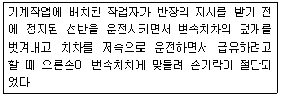
- 덮개
- 급유
- 변속치차
- 선반
(정답률: 78%)
3. 다음 중 산업안전보건법상 “화학물질 취급장소에서의 유해ㆍ위험 경고”에 사용되는 안전ㆍ보건표지의 색도 기준으로 옳은 것은?
- 7.5R 4/14
- 5Y 8.5/12
- 2.5PB 4/10
- 2.5G 4/10
(정답률: 69%)
4. 리더십의 행동이론 중 관리그리드(managerial grid) 이론에서 리더의 행동유형과 경향을 올바르게 연결한 것은?
- (1.1)형 - 무관심형
- (1.9)형 - 과업형
- (9.1)형 - 인기형
- (5.5)형 - 이상형
(정답률: 71%)
5. 버드(Bird)의 재해발생이론에 따를 경우 15건의 경상(물적 또는 인적 상해)사고가 발생하였다면 무상해, 무사고(위험순간)는 몇 건이 발생하겠는가?
- 300
- 450
- 600
- 900
(정답률: 57%)
6. 동기부여와 관련하여 다음과 같은 레윈(Lewin.K)의 법칙에서 “P"가 의미하는 것은?
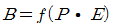
- 개체
- 인간의 행동
- 심리적 환경
- 인간관계
(정답률: 71%)
7. 다음 중 안전관리조직의 참모식(staff형) 장점이 아닌 것은?
- 경영자의 조언과 자문역할을 한다.
- 안전정보 수집이 용이하고 빠르다.
- 안전에 관한 명령과 지시는 생산라인을 통해 신속하게 전달한다.
- 안전전문가가 안전계획을 세워 문제해결 방안을 모색하고 조치한다.
(정답률: 77%)
8. 다음 중 학습목적을 세분하여 구체적으로 결정한 것을 무엇이라 하는가?
- 주제
- 학습목표
- 학습정도
- 학습성과
(정답률: 47%)
9. 토의식 교육방법 중 새로운 교재를 제시하고 거기에서의 문제점을 피교육자로 하여금 제기하게 하거나, 의견을 여러가지 방법으로 발표하게 하고, 다시 깊이 파고 들어가 토의하는 방법은?
- 포럼(Forum)
- 심포지엄(Symposium)
- 패널 디스커션(Panel discussion)
- 버즈세션(Buzz session)
(정답률: 77%)
10. 다음 중 교육훈련 방법에 있어 OJT(On the Job Training)의 특징이 아닌 것은?
- 다수의 근로자들에게 조직적 훈련이 가능하다.
- 개개인에게 적절한 지도 훈련이 가능하다.
- 훈련 효과에 의해 상호 신뢰이해도가 높아진다.
- 직장의 실정에 맞게 실제적 훈련이 가능하다.
(정답률: 85%)
11. 산업안전보건법령상 사업 내 안전ㆍ보건교육 중 관리 감독자 정기안전ㆍ보건교육 내용으로 틀린 것은? (단, 산업안전보건법 및 일반관리에 관한 사항은 제외한다.)
- 작업공정의 유해ㆍ위험과 재해예방대책에 관한 사항
- 표준안전작업방법 및 지도요령에 관한 사항
- 유해ㆍ위험 작업환경 관리에 관한 사항
- 건강증진 및 질병예방에 관한 사항
(정답률: 62%)
12. 다음 중 교육 실시 원칙상 한 번에 하나하나씩 나누어 확실하게 이해시켜야 하는 단계는?
- 도입 단계
- 제시 단계
- 적용 단계
- 확인 단계
(정답률: 67%)
13. 다음 중 위험예지훈련 4라운드의 진행순서로 옳은 것은?
- 목표설정 → 현상파악 → 대책수립 → 본질추구
- 현상파악 → 본질추구 → 대책수립 → 목표설정
- 목표설정 → 현상파악 → 본질추구 → 대책수립
- 현상파악 → 본질추구 → 목표설정 → 대책수립
(정답률: 72%)
14. 다음 중 강도율에 관한 설명으로 틀린 것은?
- 사망 및 영구전노동불능(신체장해등급 1~3급)은 손실일수 7500일로 환산한다.
- 신체장해 등급 제14급은 손실일수 50일로 환산한다.
- 영구일부노동불능은 신체 장해등급에 따른 손실일수에 300/365을 곱하여 환산한다.
- 일시적노동불능은 휴업일수에 300/365을 곱하여 손실일수를 환산한다.
(정답률: 77%)
15. 안전인증대상 방음용 귀마개의 일반구조에 관한 설명으로 틀린 것은?
- 귀의 구조상 내이도에 잘 맞을 것
- 귀마개를 착용할 때 귀마개의 모든 부분이 착용자에게 물리적인 손상을 유발시키지 않을 것
- 사용 중에 쉽게 빠지지 않을 것
- 귀마개는 사용수명 동안 피부자극, 피부질환, 알레르기 반응 혹은 그 밖에 다른 건강상의 부작용을 일으키지 않을 것
(정답률: 84%)
16. 다음 중 안전점검보고서에 수록될 주요 내용으로 적절 하지 않는 것은?
- 작업현장의 현 배치 상태와 문제점
- 안전교육 실시현황및 추진방향
- 안전관리 스텝의 인적사항
- 안전방침과 중점개선 계획
(정답률: 86%)
17. 다음 중 사업장 무재해운동 추진에 있어 무재해 시간과 무재해 일수의 산정기준에 관한 설명으로 틀린 것은?
- 무재해 시간은 실근무자와 실근로시간을 곱하여 산정 한다.
- 실근로시간의 관리가 어려운 경우에 건설업 이외 업종은 1일 8시간을 근로한 것으로 본다 .
- 실근로시간의 관리가 어려운 경우에 건설업은 1일 9시간을 근로한 것으로 본다.
- 건설업 이외의 300인 미만 사업장은 실근무자와 실근로 시간을 곱하여 산정한 무재해 시간 또는 무재해 일수를 택일하여 목표로 사용할 수 있다.
(정답률: 71%)
18. 다음 중 맥그리거(Douglas McGregor) 의 X이론과 Y이 론에 관한 관리 처방으로 가장 적절한 것은?
- 목표에 의한 관리는 Y이론의 관리 처방에 해당된다 .
- 직무의 확장은 X이론의 관리 처방에 해당된다 .
- 상부책임제도의 강화는 Y이론의 관리 처방에 해당 된다.
- 분권화 및 권한의 위임은 X이론의 관리 처방에 해당 된다.
(정답률: 58%)
19. 재해 코스트 산정에 있어 시몬즈(R.H. Simonds) 방식 에 의한 재해코스트 산정법을 올바르게 나타낸 것은?
- 직접비 + 간접비
- 간접비 + 비보험코스트
- 보험코스트 + 비보험코스트
- 보험코스트 + 사업부보상금 지급액
(정답률: 85%)
20. 다음 중 산업안전보건법령에 따라 사업주가 안전 보건 조치의무를 이행하지 아니하여 발생한 중대재해가 연간 2건이 발생하였을 경우 조치하여야 하는 사항에 해당하는 것은?(관련 규정 개정전 문제로 여기서는 기존 정답인 2번을 누르면 정답 처리됩니다. 자세한 내용은 해설을 참고하세요.)
- 보건관리자 선임
- 안전보건개선계획의 수립
- 안전관리자의 증원
- 물질안전보건자료의 작성
(정답률: 80%)
2과목: 인간공학 및 시스템안전공학
21. 다음 중 모든 시스템 안전 프로그램에서의 최초단계 해석으로 시스템의 위험요소가 어떤 위험 상태에 있는가를 정성적으로 평가하는 분석 방법은?
- PHA
- FHA
- FMEA
- FTA
(정답률: 77%)
22. 다음 중 의자를 설계하는데 있어 적용할 수 있는 일반 적인 인간공학적 원칙으로 가장 적절하지 않은 것은?
- 조절을 용이하게 한다.
- 요부 전만을 유지할 수 있도록 한다.
- 등근육의 정적 부하를 높이도록 한다.
- 추간판에 가해지는 압력을 줄일 수 있도록 한다.
(정답률: 79%)
23. 다음 중 일반적인 화학설비에 대한 안전성 평가 (safety assessment) 절차에 있어 안전대책 단계에 해당되지 않는 것은?
- 보전
- 설비 대책
- 위험도 평가
- 관리적 대책
(정답률: 53%)
24. 다음 중 인간 에러 (human error) 에 관한 설명으로 틀린 것은?
- omission error : 필요한 작업 또는 절차를 수행하지 않는데 기인한 에러
- commission error : 필요한 작업 또는 절차의 수행 지연으로 인한 에러
- extraneous error : 불필요한 작업 또는 절차를 수행 함으로써 기인한 에러
- sequential error : 필요한 작업 또는 절차의 순서 착오로 인한 에러
(정답률: 73%)
25. 다음 중 인간공학에 있어서 일반적인 인간-기계 체계 (Man-Machine System) 의 구분으로 가장 적합한 것은?
- 인간 체계 , 기계 체계 , 전기 체계
- 전기 체계 , 유압 체계 , 내연기관 체계
- 수동 체계 , 반기계 체계 , 반자동 체계
- 자동화 체계 , 기계화 체계 , 수동 체계
(정답률: 77%)
26. 다음 중 인간의 제어 및 조정능력을 나타내는 법칙인 Fitts' law 와 관련된 변수가 아닌 것은?
- 표적의 너비
- 표적의 색상
- 시작점에서 표적까지의 거리
- 작업의 난이도(Index of Difficulty)
(정답률: 66%)
27. 다음 중 정보전달에 있어서 시각적 표시장치보다 청각 적 표시장치를 사용하는 것이 바람직한 경우는?
- 정보의 내용이 긴 경우
- 정보의 내용이 복잡한 경우
- 정보의 내용이 후에 재참조되지 않는 경우
- 정보의 내용이 즉각적인 행동을 요구하지 않는 경우
(정답률: 76%)
28. 산업안전보건법령에 따라 제조업 중 유해 ㆍ위험방지 계 획서 제출대상 사업의 사업주가 유해ㆍ위험방지 계획서를 제출하고자 할 때 첨부하여야 하는 서류에 해당하지 않는 것은? (단, 기타 고용노동부장관이 정하는 도면 및 서류 등 은 제외한다.)
- 공사개요서
- 기계ㆍ설비의 배치도면
- 기계ㆍ설비의 개요를 나타내는 서류
- 원재료 및 제품의 취급 , 제조 등의 작업방법의 개요
(정답률: 59%)
29. FT 도에 사용되는 다음 기호의 명칭으로 옳은 것은?
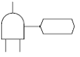
- 부정게이트
- 수정기호
- 위험지속기호
- 배타적 OR 게이트
(정답률: 38%)
30. 다음 중 결함수분석 (FTA) 에 관한 설명으로 틀린 것은?
- 연역적 방법이다.
- 버텀-업(Bottom-Up) 방식이다.
- 기능적 결함의 원인을 분석하는데 용이하다.
- 계량적 데이터가 축적되면 정량적 분석이 가능하다.
(정답률: 76%)
31. 한 대의 기계를 100시간 동안 연속 사용한 경우 6회의 고장이 발생하였고, 이때의 총고장수리시간이 15 시간이었다. 이 기계의 MTBF(Mean time between failure)는 약 얼마인가?
- 2.51
- 14.17
- 15.25
- 16.67
(정답률: 54%)
32. 작업자세로 인한 부하를 분석하기 위하여 인체 주요 관절의 힘과 모멘트를 정역학적으로 분석하려고 할 때, 분석에 반드시 필요한 인체 관련 자료가 아닌 것은?
- 관절 각도
- 관절의 종류
- 분절(segment) 무게
- 분절(segment) 무게 중심
(정답률: 65%)
33. 다음 중 일반적으로 보통 기계작업이나 편지 고르기에 가장 적합한 조명수준은?
- 30fc
- 100fc
- 300fc
- 500fc
(정답률: 60%)
34. 다음 중 정성적 표시장치를 설명한 것으로 적절하지 않은 것은?
- 연속적으로 변하는 변수의 대략적인 값이나 변화추세 변화율 등을 알고자 할 때 사용된다.
- 정성적 표시장치의 근본 자료 자체는 정량적인 것이다.
- 색체 부호가 부적합한 경우에는 계기판 표시 구간을 형상 부호화하여 나타낸다.
- 전력계에서와 같이 기계적 혹은 전자적으로 숫자가 표시된다.
(정답률: 62%)
35. 다음 중 HAZOP 기법에서 사용되는 가이드워드와 그 의미가 잘못 연결된 것은?
- As well as : 성질상의 증가
- More/Less : 정량적인 증가 또는 감소
- Part of : 성질상의 감소
- Other than : 기타 환경적인 요인
(정답률: 74%)
36. 다음 중 광원의 밝기에 비례하고, 거리의 제곱에 반비례하며, 반사체의 반사율과는 상관없이 일정한 값을 갖는 것은?
- 광도
- 휘도
- 조도
- 휘광
(정답률: 69%)
37. 다음 설명은 어떤 설계 응용 원칙을 적용한 사례인가?
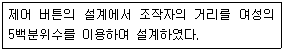
- 극단적 설계원칙
- 가변적 설계원칙
- 평균적 설계원칙
- 양립적 설계원칙
(정답률: 60%)
38. 프레스기의 안전장치 수명은 지수분포를 따르며 평균 수명은 1000 시간이다. 새로 구입한 안전장치가 향후 500시간 동안 고장 없이 작동할 확률(ⓐ)과 이미 1000시간을 사용한 안전장치가 향후 500시간 이상 견딜 확률(ⓑ)은 각각 얼마인가?
- ⓐ : 0.606, ⓑ0.606
- ⓐ : 0.707, ⓑ0.707
- ⓐ : 0.808, ⓑ0.808
- ⓐ : 0.909, ⓑ0.909
(정답률: 60%)
39. 발생확률이 각각 0.⑤, 0.08인 두 결함사상이 AND 조합으로 연결된 시스템을 FTA로 분석하였을 때 이 시스템의 신뢰도는 약 얼마인가?
- 0.004
- 0.126
- 0.874
- 0.996
(정답률: 51%)
40. 다음 중 인간공학적 설계 대상에 해당되지 않은 것은?
- 물건(Objects)
- 기계(Machinery)
- 환경(Environment)
- 보전(Maintenance)
(정답률: 51%)
3과목: 기계위험방지기술
41. 다음 중 설비의 내부에 균열 결함을 확인할 수 있는 가장 적절한 검사방법은?
- 육안검사
- 초음파탐상검사
- 피로검사
- 액체침투탐상검사
(정답률: 73%)
42. 상용운전압력 이상으로 압력이 상승할 경우 보일러의 파열을 방지하기 위하여 버너의 연소를 차단하여 열원을 제거함으로써 정상압력으로 유도하는 장치는?
- 압력방출장치
- 고저수위 조절장치
- 압력제한 스위치
- 통풍제어 스위치
(정답률: 75%)
43. 기계설비의 안전조건 중 외관의 안전성을 향상시키는 조치에 해당하는 것은?
- 전압강하ㆍ정전시의 오작동을 방지하기 위하여 자동제어장치를 하였다.
- 고장 발생을 최소화하기 위해 정기점검을 실시하였다.
- 강도이 열화를 생각하여 안전율을 최대로 고려하여 설계하였다.
- 작업자가 접촉할 우려가 있는 기계의 회전부를 덮개로 씌우고 안전색채를 적용하였다.
(정답률: 81%)
44. 크레인에서 권과방지장치 달기구 윗면이 권상장치의 아랫면과 접초할 우려가 있는 경우에는 몇 cm 이상 간격이 되도록 조정하여야 하는가? (단, 작동식 권과장치의 경우는 제외한다.)
- 25
- 30
- 35
- 40
(정답률: 44%)
45. 지게차로 중량물 운반시 차량의 중량은 30kN, 전차륜에서 하물 중심까지의 거리는 2m, 전륜차에서 차량 중심까지의 최단거리를 3m라고 할 때, 적재 가능한 하물의 최대중량은 얼마인가?
- 15kN
- 25kN
- 35kN
- 45kN
(정답률: 55%)
46. 다음 중 밀링 작업시 안전수칙으로 옳지 않은 것은?
- 테이블 위에 공구나 기타 물건 들을 올려놓지 않는다.
- 제품 치수를 측정할 때는 절삭 공구의 회전을 정지한다.
- 강력 절삭을 할 때는 일감을 바이스에 얇게 물린다.
- 상하 좌우 이송장치의 핸들은 사용 후 풀어 둔다.
(정답률: 79%)
47. 다음 중 연삭기 작업시 안전사항의 유의사항으로 옳지 않은 것은?(문제 오류로 실제 시험에서는 1, 4번이 정답 처리 되었습니다. 여기서는 1번을 누르시면 정답 처리 됩니다.)
- 연삭숫돌을 교체할 때에는 1분 이내로 시운전하고 이상 여부를 확인한다.
- 연삭숫돌의 최고사용 원주속도를 초과해서 사용하지 않는다.
- 탁상용연삭기에는 작업받침대와 조정편을 설치한다.
- 탁상용연삭기의 경우 덮개의 노출각도는 90°를 넘지 않아야 한다.
(정답률: 82%)
48. 다음 중 유체의 흐름에 있어 수격작용(water hammering)과 가장 관계가 적은 것은?
- 과열
- 밸부의 개폐
- 압력파
- 관내의 유동
(정답률: 59%)
49. 다음 중 목재 가공용 둥근톱에서 반발방지를 방호하기 위한 분할날의 설치조건이 아닌 것은?
- 톱날과의 간격은 12mm 이내
- 톱날 후면날의 2/3 이상 방호
- 분할날 두께는 둥근톱 두께의 1.1배 이상
- 덮개 하단과 가공재 상면과의 간격은 15mm 이내로 조정
(정답률: 51%)
50. 선반작업시 사용되는 방진구는 일반적으로 공작물의 길이가 직경의 몇 배 이상일 때 사용하는가?
- 4배 이상
- 6배 이상
- 8배 이상
- 12배 이상
(정답률: 61%)
51. 다음 중 프레스의 손쳐내기식 방호장치 설치기준으로 틀린 것은?
- 방호판의 폭이 금형 폭의 1/2 이상이어야 한다.
- 슬라이드 행정수가 150SPM 이상의 것에 사용한다.
- 슬라이드의 행정길이가 40mm 이상의 것에 사용한다.
- 슬라이드 하행정거리의 3/4 위치에서 손을 완전히 밀어내야 한다.
(정답률: 64%)
52. 연삭기에서 숫돌의 바깥지름이 150mm일 경우 평형플랜지 지름은 몇 mm 이상이여야 하는가?
- 30
- 50
- 60
- 90
(정답률: 78%)
53. 기계 진동에 의하여 물체에 힘이 가해질 때 전하를 발생하거나 전하가 가해질 때 진동 등을 발생시키는 물질의 특성을 무엇이라고 하는가?
- 압자
- 압전효과
- 스트레인
- 양극현상
(정답률: 66%)
54. 드릴작업시 너트 또는 볼트머리와 접촉하는 면을 고르게 하기 위하여 깎는 작업을 무엇이라 하는가?
- 보링(boring)
- 리밍(reaming)
- 스폿 페이싱(spot facing)
- 카운터 싱킹(counter sinking)
(정답률: 63%)
55. 다음 중 산업용 로봇의 운전시 근로자 위험을 방지하기 위한 필요조치로서 가장 적합한 것은?
- 미숙련자에 의한 로봇 조정은 6시간 이내에만 허용 한다.
- 근로자가 로봇에 부딪칠 위험이 있을 때에는 안전매트 및 높이 1.8m 이상의 방책을 설치한다.
- 조작 중 이상 발견시 로봇을 정지시키지 말고 신속하게 관계 기관에 통보한다.
- 급유는 작업의 연속성과 오동작 방지를 위하여 운전중에만 실시하여야 한다.
(정답률: 70%)
56. 다음 중 아세틸렌 용접시 역류를 방지하기 위하여 설치 하여야 하는 것은?
- 안전기
- 청정기
- 발생기
- 유량기
(정답률: 78%)
57. 회전축, 커플링에 사용하는 덮개는 다음 중 어떠한 위험점을 방호하기 위한 것인가?
- 협착점
- 접선물림점
- 절단점
- 회전말림점
(정답률: 71%)
58. 다음 중 프레스 작업시작 전 일반적인 점검사항으로서 가장 필요한 것은?
- 클러치 상태점검
- 상하 형틀의 간극 점검
- 전원단전 유무확인
- 테이블의 상태 점검
(정답률: 62%)
59. 클러치 맞물림 개소수가 4개, 양수기동식 안전장치의 안전거리가 360mm일 때 양손으로 누름단추를 조작하고 슬라이드가 하사점에 도달하기까지의 소요 최대시간은 얼마인가?
- 90ms
- 125ms
- 225ms
- 576ms
(정답률: 40%)
60. 작업장 내 운반이 주 목적인 구내운반차의 핸들 중심에서 차체 바깥 측까지의 안전거리로 옳은 것은?
- 45cm 이상
- 55cm 이상
- 65cm 이상
- 75cm 이상
(정답률: 46%)
4과목: 전기위험방지기술
61. 정전기 재해방지를 위한 배관 내 액체의 유속제한에 관한 사항으로 옳은 것은?
- 저항률이 1010 Ω.cm 미만의 도전성 위험물의 배관유속은 7m/s 이하로 할 것
- 에텔, 이황화탄소 등과 같이 유동대전이 심하고 폭발 위험성이 높으면 4m/s 이하로 할 것
- 물이나 기체를 혼합하는 비수용성 위험물의 배관 내 유속은 5m/s 이하로 할 것
- 저항률이 1010 Ω.cm 이상인 위험물의 배관 내 유속은 배관내경 4인치일 때 10m/s 이하로 할 것
(정답률: 48%)
62. 전기설비의 안전을 유지하기 위해서는 체계적인 점검, 보수가 아주 중요하다. 방폭전기설비의 유지보수에 관한 사항으로 틀린 것은?
- 점검원은 해당 전기설비에 대해 필요한 지식과 기능을 가져야 한다.
- 불꽃 점화시점의 경과조치에 따른다.
- 본질안전 방폭구조의 경우에도 통전 중에는 기기의 외함을 열어서는 안 된다.
- 위험분위기에서 작업 시에는 수공구 등의 충격에 의한 불꽃이 생기지 않도록 주의해야 한다.
(정답률: 53%)
63. 감전사고 행위별 통계에서 가장 빈도가 높은 것은?
- 전기공사나 전기설비 보수작업
- 전기기기 운전이나 점검작업
- 이동용 전기기기 점검 및 조작작업
- 가전기기 운전 및 보수작업
(정답률: 68%)
64. 인체의 전기저항을 0.5kΩ이라고 하면 심실세동을 일으키는 위험한계 에너지는 몇 J 인가? (단, 통전시간은 1초이다.)
- 13.6
- 12.6
- 11.6
- 10.6
(정답률: 70%)
65. 방폭형 기기에 폭발성 가스가 내부로 침입하여 내부에서 폭발이 발생하여도 이 압력에 견디도록 제작한 방폭구조는?
- 내압(d) 방폭구조
- 압력(p) 방폭구조
- 안전증(e) 방폭구조
- 본질안전(i) 방폭구조
(정답률: 74%)
66. 다음 중 계통접지의 목적으로 가장 옳은 것은?
- 누전되고 있는 기기에 접촉되었을 때의 감전방지를 위해
- 고압전로와 저압전로가 혼촉되었을 때의 감전이나 화재 방지를 위해
- 병원에 있어서 의료기기 계통의 누전을 10㎂ 정도도 허용하지 않기 위해
- 의사의 몸에 축적된 정전기에 의해 환자가 쇼크사 하지 않도록 하기 위해
(정답률: 64%)
67. 절연열화가 진행되어 누설전류가 증가하면 여러 가지 사고를 유발하게 되는 경우로서 거리가 먼 것은?
- 감전사고
- 누전화재
- 정전기 증가
- 아크 지락에 의한 기기의 손상
(정답률: 64%)
68. 정전유도를 받고 있는 접지되어 있지 않는 도전성 물체에 접촉한 경우 전격을 당하게 되는데 물체에 유도된 전압 V(V)를 옳게 나타낸 것은? (단, 송전선전압 E, 송전선과 물체사이의 정전용량을 C1, 물체와 대지사이의 정전용량을 C2, 물체와 대지사이의 저항을 무한대인 경우이다.)
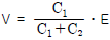
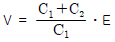
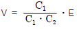
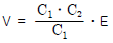
(정답률: 62%)
69. 개폐기로 인한 발화는 개폐시의 스파크에 의한 가연물의 착화화재가 많이 발생한다. 이를 방지하기 위한 대책으로 틀린 것은?
- 가연성증기, 분진 등이 있는 곳은 방폭형을 사용한다.
- 개폐기를 불연성 상자 안에 수납한다.
- 비포장 퓨즈를 사용한다.
- 접속부분의 나사풀림이 없도록 한다.
(정답률: 76%)
70. 전기설비 사용 장소의 폭발위험성에 대한 위험장소 판정시의 기준과 가장 관계가 먼 것은?
- 위험가스 현존 가능성
- 통풍의 정도
- 습도의 정도
- 위험 가스의 특성
(정답률: 50%)
71. 환기가 충분한 장소에 대한 설명으로 옳은 것은?
- 대기 중 가스 또는 증기의 밀도가 폭발 하한계의 50% 초과하여 축적되는 것을 방지하기 위한 충분한 환기량이 보장되는 장소
- 수직 또는 수평의 외부공기 흐름을 방해하지 않는 구조의 건축물 또는 실내로서 지붕과 한면의 벽이 있는 건축물
- 밀폐 또는 부분적으로 밀폐된 장소로써 옥외의 동등한 정도의 환기가 자연환기방식 또는 고장 시 경보발생 등의 조치가 있는 자연 순환방식으로 보장되는 장소
- 기타 적합한 방법으로 환기량을 계산하여 폭발 하한계의 35% 농도를 초과하지 않음이 보장되는 장소
(정답률: 51%)
72. 전력케이블을 사용하는 회로나 역률개선용 전력콘덴서 등이 접속되어 있는 회로의 정전작업 시에 감전의 위험을 방지하기 위한 조치로서 가장 옳은 것은?
- 개폐기의 통전금지
- 잔류전하의 방전
- 근접활선에 대한 방호장치
- 안전표지의 설치
(정답률: 67%)
73. 작업장에서 교류 아크용접기로 용접작업을 하고 있다. 용접기에 사용하고 있는 용품 중 잘못 사용되고 있는 것은?
- 습윤장소와 2m 이상 고소작업 시에 자동전격방지기를 부착한 후 작업에 임하고 있다.
- 교류 아크용접기 홀더는 절연이 잘 되어 있으며, 2차측 전선은 비닐절연전선을 사용하고 있다.
- 터미널은 케이블 커넥터로 접속한 후 충전부는 절연테이프로 테이핑 처리를 하였다.
- 홀더는 KS 규정의 것만 사용하고 있지만 자동전격 방지기는 안전보건공단 검정필을 사용한다.
(정답률: 58%)
74. 감전에 의하여 넘어진 사람에 대한 중요한 관찰사항이 아닌 것은?
- 의식의 상태
- 맥박의 상태
- 호흡의 상태
- 유입점과 유출점의 상태
(정답률: 79%)
75. 전압이 동일한 경우 교류가 직류보다 위험한 이유를 가장 잘 설명한 것은?
- 교류의 경우 전압의 극성변화가 있기 때문이다.
- 교류는 감전 시 화상을 입히기 때문이다.
- 교류는 감전 시 수축을 일으킨다.
- 직류는 교류보다 사용빈도가 낮기 때문이다.
(정답률: 71%)
76. 다음 그림과 같은 완전 누전되고 있는 전기기기의 외함에 사람이 접촉하였을 경우 인체에 흐르는 전류(lm)는? (단, E(V)는 전원의 대지전압, R2(Ω)는 변압기 1선 접지, 제2종 접지저항, R3(Ω)는 전기기기 외함 접지, 제3종 접지저항, Rm(Ω)은 인체저항이다.)(오류 신고가 접수된 문제입니다. 반드시 정답과 해설을 확인하시기 바랍니다.)
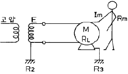
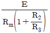
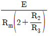
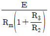
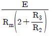
(정답률: 50%)
77. 지락이 생긴 경우 접촉상태에 따라 접촉전압을 제한할 필요가 있다. 인체의 접촉상태에 따른 허용접촉전압을 나타낸 것으로 다음 중 옳지 않은 것은?
- 제1종 2.5V 이하
- 제2종 25V 이하
- 제3종 42V 이하
- 제4종 제한 없음
(정답률: 72%)
78. 정전기 방전에 의한 화재 및 폭발 발생에 대한 설명으로 틀린 것은?
- 정전기 방전에너지가 어떤 물질의 최소착화에너지보다 크게 도면 화재, 폭발이 일어날 수 있다.
- 부도체가 대전되었을 경우에는 정전에너지보다 대전 전위 크기에 의하여 화재, 폭발이 결정된다.
- 대전된 물체에 인체가 접근했을 때 전격을 느낄 정도이면 화재, 폭발의 가능성이 있다.
- 작업복에 대전된 정전에너지가 가연성 물질의 최소착화 에너지보다 클 때는 화재, 폭발의 위험성이 있다.
(정답률: 39%)
79. 가공 송전선로에서 낙뢰의 직격을 받았을 때 발생하는 낙뢰 전압이나 개폐서지 등과 같은 이상 고전압은 일반적으로 충격파라 부른다. 이러한 충격파는 어떻게 표시하는가?
- 파두시간 × 파미부분에서 파고치의 63%로 감소할 때 까지의 시간
- 파두시간 × 파미부분에서 파고치의 50%로 감소할 때 까지의 시간
- 파장시간 × 파미부분에서 파고치의 63%로 감소할 때 까지의 시간
- 파장시간 × 파미부분에서 파고치의 50%로 감소할 때 까지의 시간
(정답률: 60%)
80. 상용 주파수(60Hz)의 교류에 건강한 성인 남자가 감전 되었을 경우 다른 손을 사용하지 않고 자력으로 손을 뗄 수 있는 최대전류(가수전류)는 몇 mA 인가?(문제 오류로 당시 시험에 3번으로 발표되었지만 추후 2번과 중복답안 인정이되고 촤종적으로 2번이 정답이라고 결론났습니다. 따라서 여기서는 2번을 누르면 정답 처리 됩니다.)
- 1~2
- 7~8
- 10~15
- 18~22
(정답률: 72%)
5과목: 화학설비위험방지기술
81. 산업안전보건기준에 관한 규칙에 지정한 ‘화학설비 및 그 부속설비의 종류’중 화학설비의 부속설비에 해당하는 것은?
- 응축기ㆍ냉각기ㆍ가쳘기 등의 열교환기류
- 반응기ㆍ혼합조 등의 화학물질 반응 또는 혼합장치
- 펌프류ㆍ압축기 등의 화학물질 이송 또는 압축설비
- 온도ㆍ압력ㆍ유량 등을 지시ㆍ기록하는 자동제어 관련 설비
(정답률: 65%)
82. 다음 중 가연성 고체물질을 난연화시키는 난연제로 적당하지 않은 것은?
- 인
- 브롬
- 비소
- 안티몬
(정답률: 44%)
83. 다음 중 CF3Br 소화약제를 가장 적절하게 표현한 것은?
- 하론 1031
- 하론 1211
- 하론 1301
- 하론 2402
(정답률: 77%)
84. 다음 중 가연성 물질이 연소하기 쉬운 조건으로 옳지 않은 것은?
- 연소 발열량이 클 것
- 점화에너지가 작을 것
- 산소화 친화력이 클 것
- 입자의 표면적이 작을 것
(정답률: 69%)
85. 금속의 증기가 공기 중에서 응고되어 화학변화를 일으켜 고체의 미립자로 되어 공기 중에 부유하는 것을 의미하는 용어는?
- 흄(fume)
- 분진(dust)
- 미스트(mist)
- 스모크(smoke)
(정답률: 65%)
86. 다음 중 이상반응 또는 폭발로 인하여 발생되는 압력의 방출장치가 아닌 것은?
- 파열판
- 폭압방산공
- 화염방지기
- 가용합금안전밸브
(정답률: 61%)
87. 소화설비와 주된 소화적용방법의 연결이 옳은 것은?
- 포소화설비 - 질식소화
- 스프링클러설비 - 억제소화
- 이산화탄소소화설비 - 제거소화
- 할로겐화합물소화설비 - 냉각소화
(정답률: 62%)
88. 물과 카바이드가 결합하면 어떤 가스가 생성되는가?
- 염소가스
- 아황산가스
- 수성가스
- 아세틸렌가스
(정답률: 63%)
89. 연소의 형태 중 확산연소의 정의로 가장 적절한 것은?
- 고체의 표면이 고온을 유지하면서 연소하는 현상
- 가연성 가스가 공기 중의 지연성 가스와 접촉하여 접촉면에서 연소가 일어나는 현상
- 가연성 가스와 지연성 가스가 미리 일정한 농도로 혼합된 상태에서 점화원에 의하여 연소되는 현상
- 액체 표면에서 증발하는 가연성 증기가 공기와 혼합하여 연소범위 내에서 열원에 의하여 연소하는 현상
(정답률: 50%)
90. 메탄 20%, 에탄 40%, 프로판 40%로 구성된 혼합가스가 공기 중에서 연소할 때 이 혼합가스의 이론적 화학양론 조성은 약 몇 % 인가? (단, 메탄, 에탄, 프로판의 양론농도(Cst)는 각 각 9.5%, 5.6%, 4.0% 이다.)
- 5.2%
- 7.7%
- 9.5%
- 12.1%
(정답률: 52%)
91. 다음 중 산업안전보건법상 공정안전보고서의 제출대상이 아닌 것은?
- 원유 정제처리업
- 농약제조업(원제 제조)
- 화약 및 불꽃제품 제조업
- 복합비료의 단순혼합 제조업
(정답률: 67%)
92. 다음 중 폭발범위에 관한 설명으로 틀린 것은?
- 상한값과 하한값이 존재한다.
- 온도에 비례하지만 압력과는 무관하다.
- 가연성 가스의 종류에 따라 각각 다른 값을 갖는다.
- 공기와 혼합된 가연성 가스의 체적 농도로 나타낸다.
(정답률: 78%)
93. 화재감지기의 종류 중 연기감지기의 작동방식에 해당되는 것은?
- 차동식
- 보상식
- 정온식
- 이온화식
(정답률: 64%)
94. 산업안전보건기준에 관한 규칙에서 규정하고 있는 산화성 액체 또는 산화성 고체에 해당하지 않는 것은?
- 염소산
- 피크린산
- 과망간산
- 과산화수소
(정답률: 48%)
95. 다음 중 금속화재에 해당하는 화재의 급수는?
- A급
- B급
- C급
- D급
(정답률: 73%)
96. 가연성 가스 및 증기의 위험도에 따른 방폭전기기기의 분류로 폭발등급을 사용하는데, 이러한 폭발등급을 결정하는 것은?
- 발화도
- 화염일주한계
- 폭발한계
- 최소발화에너지
(정답률: 69%)
97. 아세틸렌 용접장치로 금속을 용접할 때 아세틸렌 가스의 발생압력은 게이지 압력으로 몇 kPa를 초과하여서는 안되는가?
- 49
- 98
- 127
- 196
(정답률: 77%)
98. 분진폭발의 특징에 관한 설명으로 옳은 것은?
- 가스폭발보다 발생에너지가 작다.
- 폭발압력과 연소속도는 가스폭발보다 크다.
- 화염의 파급속도보다 압력의 파급속도가 크다.
- 불완전연소로 인한 가스중독의 위험성이 적다.
(정답률: 64%)
99. 압축기와 송풍기의 관로에 심한 공기의 맥도오가 진동을 발생하면서 불안정한 운전이 되는 서어징(surging) 현상의 방지법으로 옳지 않은 것은?
- 풍량을 감소시킨다.
- 배관의 경사를 완만하게 한다.
- 교축밸브를 기계에서 멀리 설치한다.
- 토출가스를 흡입축에 바이패스 시키거나 방출밸브에 의해 대기로 방출시킨다.
(정답률: 72%)
100. 다음 중 펌프의 공동현상(cavitation)을 방지하기 위한 방법으로 가장 적절한 것은?
- 펌프의 설치 위치를 높게 한다.
- 펌프의 회전속도를 빠르게 한다.
- 펌프의 유효 흡입양정을 작게한다.
- 흡입측에서 펌프의 토출량을 줄인다.
(정답률: 52%)
6과목: 건설안전기술
101. 안전난간대에 폭목(toe board)을 대는 이유는?
- 작업자의 손을 보호하기 위하여
- 작업자의 작업능률을 높이기 위하여
- 안전난가대의 강도를 높이기 위하여
- 공구 등 물체가 작업발판에서 지상으로 낙하되지 않도록 하기 위하여
(정답률: 70%)
102. 차량계 건설기계 작업시 기계의 정도, 정락 등에 의한 근로자의 위험을 방지하기 위한 유의사항과 거리가 먼 것은?
- 변속기능의 유지
- 갓길의 붕괴방지
- 도로의 폭 유지
- 지반의 부동침하방지
(정답률: 67%)
103. 장비가 위치한 지면보다 낮은 장소를 굴착하는데 적합한 장비는?
- 백호우
- 파워쇼벨
- 트럭크레인
- 진폴
(정답률: 76%)
104. 비계에서 벽 고정을 하고 기둥과 기둥을 수평재나. 가새로 연결하는 가장 큰 이유는?
- 작업자의 추락재해를 방지하기 위하여
- 좌굴을 방지하기 위해
- 인장파괴를 방지하기 위해
- 해체를 용이하게 하기 위해
(정답률: 52%)
1⑤. 가설통로를 설치하는 경우 경사는 최대 몇 도 이하로 하여야 하는가?
- 20
- 25
- 30
- 35
(정답률: 69%)
106. 흙막이 공법 선정시 고려사항으로 틀린 것은?
- 흙막이 해체를 고려
- 안전하고 경제적인 공법 선택
- 차수성이 낮은 공법 선택
- 지반성상에 적합한 공법 선택
(정답률: 63%)
107. 흙막이공의 파괴 원인 중 하나인 보일링(boiling) 현상에 관한 설명으로 틀린 것은?
- 지하수위가 높은 지반을 굴착할 때 주로 발생한다.
- 연약 사질토 지반에서 주로 발생한다.
- 시트파일(sheet pile) 등의 저면에 분사현상이 발생한다.
- 연약 점토지납에서 굴착면의 융기로 발생한다.
(정답률: 48%)
108. 철골건립준비를 할 때 준수하여야 할 사항과 가장 거리가 먼 것은?
- 지상 작업장에서 건립준비 및 기계기구를 배치할 경우에는 낙하물의 위험이 없는 편탄한 장소를 선정하여 정비하고 경사지에서 작업대나 임시발판 등을 설치하는 등 안전조치를 한 후 작업하여야 한다.
- 건립작업에 다소 지장이 있다하더라도 수목은 제거 하여서는 안된다.
- 산용전에 기계기구에 대한 정비 및 보수를 철저히 실시 하여야 한다.
- 기계에 부탁된 앵커 등 고정장치와 기초구조 등을 확인하여야 한다.
(정답률: 78%)
109. 다음 중 양중기에 해당되지 않는 것은?
- 어스드릴
- 크레인
- 리프트
- 곤돌라
(정답률: 74%)
110. 히빙(Heaving)현상 방지대책으로 틀린 것은?
- 소단굴착을 실시하여 소단부 흙의 중량이 바닥을 누르게 한다.
- 흙막이 벽체 배면의 지반을 개량하여 흙의 전단강도를 높인다.
- 부풀어 솟아오르는 바닥면의 토사를 제거한다.
- 흙막이 벽체의 근입깊이를 깊게 한다.
(정답률: 60%)
111. 건축물의 해체공사에 대한 설명으로 틀린 것은?
- 압쇄기와 대형 브레이커(Breaker)는 파워쇼벨 등에 설치하여 사용한다.
- 철제 햄머(Hammer)는 크레인 등에 설치하여 사용한다.
- 핸드 브레이커(Hand breaker) 사용 시 수직보다는 경사를 주어 파쇄하는 것이 좋다.
- 전단톱의 회전날에는 접촉방지 커버를 설치하여야 한다.
(정답률: 67%)
112. 추락방지용 방망 중 그물코의 크기가 5cm 인 매듭방망 신품의 인장강도는 최소 몇 kg 이상이어야 하는가?
- 60
- 110
- 150
- 200
(정답률: 68%)
113. 강풍 시 타워크레인의 운전작업을 중지해야 하는 순간 풍속기준은?(2017년 03월 03일 개정된 규정 적용됨)
- 순간풍속이 초당 5m 초과
- 순간풍속이 초당 10m 초과
- 순간풍속이 초당 15m 초과
- 순간풍속이 초당 20m 초과
(정답률: 56%)
114. 달비계의 최대 적재하중을 정함에 있어서 활용하는 안전계수의 기준으로 옳은 것은? (단, 곤돌라의 달비계를 제외한다.)
- 달기 와이어로프 : 5 이상
- 달기 강선 : 5 이상
- 달기 체인 : 3 이상
- 달기 훅 : 5 이상
(정답률: 64%)
115. 해체공사에 있어서 발생되는 진동공해에 대한 설명으로 틀린 것은?
- 진동수의 범위는 1 ~ 90Hz 이다.
- 일반적으로 연직진동이 수평진동 보다 작다.
- 진동의 전파거리는 예외적인 것을 제외하면 진동원에서부터 100m 이내 이다.
- 지표에 있어 진동의 크기는 일반적으로 지진의 진도계급이라고 하는 미진에서 강진의 범위에 있다.
(정답률: 58%)
116. 건설업 산업안전보건 관리비 중 계상비용에 해당되지 않는 것은?
- 외부비계, 작업발판 등의 가설구조물 설치 소요비
- 근로자 건강관리비
- 건설재해예방 기술지도비
- 개인보호구 및 안전장구 구입비
(정답률: 56%)
117. 연약 점토지반 개량에 있어서 적합하지 않은 공법은?
- 샌드드레인(Sand drain) 공법
- 생석회 말뚝(Chemico pile) 공법
- 페이퍼드레인(Paper drain) 공법
- 바이브로 플로테이션(Vibro flotation) 공법
(정답률: 58%)
118. 달비계에 사용하는 와이어로프의 사용금지 기준으로 틀린 것은?
- 이음매가 있는 것
- 열과 전기 충격에 의해 손상된 것
- 지름의 감소가 공칭지름의 7%를 초과하는 것
- 와이어로프의 한 꼬임에서 끊어진 소선의 수가 7% 이상 인것
(정답률: 66%)
119. 다음 중 방망에 표시해야 할 사항이 아닌 것은?
- 제조자명
- 제조년월
- 재봉 치수
- 방망의 신축성
(정답률: 63%)
120. 토사붕괴에 따른 재해를 방지하기 위한 흙막이 지보공 설비가 아닌 것은?
- 흙막이판
- 말뚝
- 턴버클
- 띠장
(정답률: 69%)